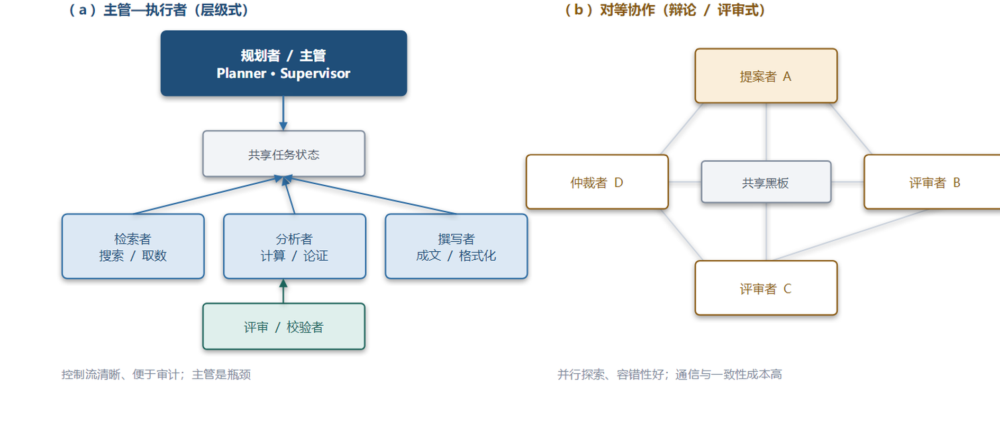

6.6 Agentic AI：从单个智能体到智能体系统
6.6.1 基本概念：一个新的范式
2024 年下半年开始，“Agentic AI”逐渐取代”AI Agent”成为讨论的焦点。它不是”更聪明的智能体”的同义词，而指一种系统级的工作方式：由多个专业化的智能体组成，在更广泛的工作流中进行协调、沟通和动态分配子任务。
其核心特征可以概括为四点：多智能体协作、动态任务分解、持久化记忆、高度自主性。与单个智能体的关键差别在于，Agentic AI 更侧重于决策过程，而不仅仅是内容生成；它不完全依赖人类提示，也无需持续的人类监督。相对于一般意义上的”智能体”，它具备更先进、通常更系统化且高度自主的范式特征。
这一范式的出现有其技术动因。当任务规模超过单个上下文窗口的承载能力时，把任务拆给多个各自拥有独立上下文的智能体，是唯一可行的扩展方式；当任务需要多种异质能力（检索、编程、审校、翻译）时，用同一个提示词让一个模型”什么都会”，不如让多个专精的智能体各司其职；当任务需要在多个方向上并行探索时，串行执行的单智能体在时延上无法接受。
从系统视角看，Agentic AI 的本质是把”一个大上下文的推理”重构为”多个小上下文的协作”。这一重构带来三个收益：上下文隔离降低了污染与干扰；角色分工提升了对特定子任务的稳定性；并行化缩短了端到端时延。代价同样明确：通信开销、一致性维护、错误传播与调试复杂度都会上升。
6.6.2 概念辨析：生成式 AI、智能体与 Agentic AI
三者常被混为一谈，但它们在功能定位、运行机制与自主性水平上有清晰的递进关系。表 6-9 与表 6-10 从不同维度给出了对照。
表 6-9 生成式 AI、智能体与 Agentic AI 的功能对照
| 特征 | 生成式 AI | 智能体 | Agentic AI |
|---|---|---|---|
| 核心功能 | 内容生成 | 使用工具执行特定任务 | 复杂工作流自动化 |
| 主要目标 | 基于提示创建新颖内容 | 使用外部工具执行特定任务 | 自动化复杂工作流或实现高层次目标 |
| 运行机制 | 提示→LLM→输出 | 提示→工具调用→LLM→输出 | 目标→代理编排→输出 |
| 系统结构 | 单一模型 | LLM+工具 | 多代理系统 |
| 外部数据访问 | 无 | 通过外部 API | 协调的多代理访问 |
| 关键特质 | 反应性 | 工具使用 | 协作 |
| 核心引擎 | 单个大模型 | 单个大模型 | 多个大模型 |
| 提示的作用 | 输入触发 | 任务指导 | 子任务指导 |
表 6-10 三者在自主性、编排与决策上的差异
| 特征 | 生成式 AI | 智能体 | Agentic AI |
|---|---|---|---|
| 工具/API | 无 | 有 | 有 |
| 多代理 | 无 | 无 | 有 |
| 编排 | 无 | 无 | 有（隐式或显式） |
| 自主性水平 | 低 | 中等 | 高 |
| 外部交互 | 无 | 通过外部 API | 协调的多代理访问 |
| 内部交互 | 不适用 | 不适用 | 频繁 |
| 决策制定 | 模式选择 | 工具使用 | 目标分解与分配 |
两张表结合起来看，可以提炼出一条演进主线：从”生成内容”到”执行任务”，再到”组织任务”。生成式 AI 的产物是文本，智能体的产物是任务结果，Agentic AI 的产物是一套可复用的工作流程。三者不是替代关系：Agentic AI 系统内部仍然由生成式模型驱动，也仍然包含单个智能体的执行循环；它增加的是”组织层”。
这一组织层的价值，可以用一个类比来说明。生成式 AI 像一位博学的顾问，你问什么它答什么；智能体像一位能干的助理，你说要什么它去办；Agentic AI 像一个项目团队，你说清目标，团队自己分工、互相检查、汇总交付。团队的优势不在于单个成员更强，而在于分工、复核与并行。
团队也有团队的毛病：沟通成本、责任稀释、以及”集体幻觉”——多个智能体相互确认同一个错误。因此，Agentic AI 的设计难点不在于”把多个智能体接起来”，而在于”如何让协作产生净收益”。第 6.6.3 节讨论的编排模式，正是对这一问题的回答。
6.6.3 多智能体编排：模式与代价
多智能体系统的核心问题是编排（orchestration）：谁来决定任务怎么分、分给谁、结果怎么合。图 6-7 给出了两种典型编排形态。

图 6-7 多智能体协作的两种典型编排
说明：（a）主管—执行者的层级式编排，控制流清晰但主管易成瓶颈；（b）对等协作的辩论/评审式编排，容错性好但通信与一致性成本高。
主管—执行者（层级式）。 由一个规划者或主管智能体负责分解任务、分派子任务、汇总结果，若干执行者各自完成专门的工作。这种模式的优点是控制流清晰、便于审计、职责边界明确，适合可以预先分解的任务（如”检索—分析—撰写—审校”的文档生产流水线）。缺点是主管容易成为瓶颈：所有信息都要经过它，它的上下文会迅速膨胀；主管的判断错误会传导到全部子任务。
对等协作（辩论/评审式）。 多个地位平等的智能体围绕同一问题独立提出方案，通过相互批评、投票或仲裁达成共识。这种模式的优点是并行探索、容错性好，单个智能体的错误不容易主导结论；适合答案不唯一、需要多角度审视的任务（如方案评估、事实核查）。缺点是通信开销大——若 n 个智能体两两通信，消息数随 n² 增长；一致性成本高——需要额外的仲裁机制；且存在”群体极化”风险，多个智能体可能相互强化同一个偏见。
除这两种之外，还有几种常见模式。流水线式：每个智能体负责一个阶段，前一个的输出是后一个的输入，适合步骤固定、依赖清晰的任务。黑板式：所有智能体读写同一块共享状态（黑板），适合需要频繁同步的任务。市场式：任务被分解为可竞标的单元，智能体根据自身能力与成本竞标，适合任务异构、资源需要动态分配的场合。
选择编排模式时，可以依据三个判据。任务的耦合度：子任务之间依赖越强，越需要集中式协调；依赖越弱，越适合并行与去中心化。错误的代价：错误代价越高，越需要多重校验，辩论式或”执行者—评审者”结对更合适。时延预算：需要低时延的场景应尽量减少串行环节与通信轮次。
必须强调的是，多智能体并不自动优于单智能体。业界有一个被反复验证的经验：在单智能体可以达到同等效果时，不要引入多智能体。 因为每增加一个智能体，就增加一份上下文组装成本、一份通信成本、一份失败可能性，以及显著增加的调试难度。多智能体的正当理由只有三个：上下文必须隔离、能力必须专精、时延必须并行。除此之外的”多智能体”，往往只是把单智能体的复杂度转移到了架构层。
通信协议。 多智能体协作需要协议支撑。当前有两类协议值得关注。一类是面向”智能体—工具”的协议，如 MCP（Model Context Protocol），它标准化了智能体如何发现和调用外部工具与数据源，解决了”每个工具都要单独适配”的问题。另一类是面向”智能体—智能体”的协议，如 A2A（Agent-to-Agent），它定义了智能体之间如何描述能力、发起任务、回传结果。协议的价值在于解耦：工具与智能体可以由不同团队、甚至不同厂商提供，只要遵循协议即可互操作。协议的代价是抽象层的开销与表达能力限制，因此协议设计始终在”通用”与”高效”之间权衡。
6.6.4 应用举例
多代理研究助手。 这是目前最成熟的应用形态：规划者把研究问题拆成若干子问题，检索代理分头搜集资料，分析代理做交叉验证与数据整理，撰写代理成文，审校代理检查事实与引用。其价值在于把”一个人做不完的调研”变成”一条可并行的流水线”，同时通过评审环节降低幻觉。这类系统的关键指标不是”写得多快”，而是”引用的可追溯率”与”事实错误率”。
智能机器人协作。 多机器人系统的协作，如仓储自动化、无人机巡检、自动采摘等。与软件智能体不同，机器人协作必须处理物理约束：通信延迟、定位误差、碰撞风险、能源限制。因此其编排往往采用”集中规划 + 分布执行”的混合结构，且必须保留独立的安全控制器——安全不能依赖语言模型的判断。
协作医疗决策支持。 分布式医疗推理：影像分析代理、病史梳理代理、指南检索代理、药物相互作用检查代理各自给出意见，由仲裁环节汇总，最终由医生确认。这类系统的设计原则是”辅助而非替代”：系统提供结构化的证据与分歧点，把最终判断权保留给专业人员。其技术难点不在模型能力，而在分歧的表达——系统必须能说明”哪几条证据支持哪个结论”，而不是只给一个概率。
多代理游戏 AI 与自适应工作流。 在仿真环境中，多智能体可以低成本地试错与演化，这使其成为研究协作策略的理想平台。在企业系统中，Agentic AI 则表现为”去中心化的任务执行与高效协调”：不同部门各有自己的智能体，通过协议协同完成跨部门流程。这类应用的挑战在于治理：当智能体可以自主跨系统操作时，权限边界、审计追踪与责任归属必须提前设计。
6.6.5 风险、评估与治理
能力越强，风险越大。Agentic AI 的风险与单智能体相比有质的变化，因为它引入了”系统级”的失效模式。
错误传播与级联失效。 在多智能体系统中，一个智能体的错误输出会成为下游智能体的输入，并被当作事实。更糟的是，下游智能体往往会”合理化”上游的错误，使错误看起来更可信。防御手段包括：关键结论要求多源交叉验证、在智能体之间传递信息时附带置信度与来源、设置”怀疑者”角色专门寻找反例。
成本与资源失控。 多个智能体并行运行，token 消耗可能呈数量级增长；循环调用、相互触发还可能造成”无限对话”。防御手段包括：全局预算、单智能体配额、通信轮次上限、以及检测循环的机制。
上下文膨胀与信息失真。 智能体之间的消息在多次传递后会被摘要、改写、丢失细节，最终汇总的结果可能与原始事实相去甚远，这就是协作中的”传话游戏”效应。防御手段包括：保留原始证据的引用、限制摘要层数、在关键节点回到原始数据核对。
安全攻击面扩大。 每个智能体、每个工具、每条通信通道都是潜在的攻击入口。提示注入可以通过一个被污染的网页，影响整个智能体网络。防御需要系统级设计：最小权限、网络隔离、输入净化、输出审查、以及”数据与指令分离”的严格实现。
可观测性与可调试性下降。 单智能体的轨迹尚可阅读，多智能体的交互图则可能极其复杂。没有良好的追踪基础设施，故障几乎无法定位。因此，生产级的 Agentic AI 系统必须内建分布式追踪：为每次任务分配 trace id，记录每个智能体的输入、输出、工具调用与耗时。
伦理与责任。 当系统自主完成了一系列决策，谁对结果负责？是设定目标的人、部署系统的组织、提供模型的厂商，还是系统本身？法律上尚无定论，但工程上可以先行：明确责任边界、保留完整审计日志、对高风险决策强制人工确认、并向用户披露系统的自主程度。
评估方面，Agentic AI 需要比单模型更立体的指标体系。至少应包含四类：效果（任务成功率、子目标完成率）、效率（轮数、时延、token 成本）、稳健（扰动下的表现、异常恢复率）、安全（越权尝试拦截率、注入攻击成功率、人工干预率）。只报告成功率的评估是不完整的，因为它无法揭示系统在长尾与对抗条件下的行为。
6.6.6 发展方向
多代理扩展。 从几个智能体的小团队，走向大规模、分布式、异构智能体并行工作的系统。这里的挑战不只是数量，更是异构性：不同厂商、不同能力、不同信任级别的智能体如何协同。这需要标准化的能力描述、信誉机制与任务市场。
统一编排。 动态角色分配、管理通信、协调依赖、冲突解决。当前的编排多由人预先设计流程图，未来需要系统根据任务特征自动选择编排形态：简单任务用单智能体，复杂任务自动升级为团队，并在执行中动态调整。
持久性记忆。 语义、场景、共享等多层次记忆。Agentic AI 的记忆不只是”记住对话”，而是”记住组织知识”：哪些方案在过去奏效、哪些客户有特殊要求、哪些流程容易出错。这要求记忆系统从”片段存储”走向”结构化知识”，并与知识图谱深度融合。
仿真规划。 提前预演决策路径、优化行动方案。在真实环境中试错代价太高，因此”在内部世界中先演练一遍”成为重要方向：用世界模型模拟行动后果，用搜索评估多条路径，再把最优方案落到现实。这与经典规划中的”模型预测控制”思想一脉相承。
伦理治理。 系统级伦理、法律、责任边界，确保安全与合规。技术层面的治理包括：可解释的决策记录、可撤销的操作设计、权限与配额的技术强制、以及对自主等级的显式配置。制度层面的治理包括：披露义务、审计要求、事故报告机制。
行业专用系统。 深度定制、专家级的智能体系。通用智能体在开放域表现亮眼，但在专业领域往往不如”通用模型 + 领域工具 + 领域知识”的组合。未来的形态可能是”通用底座 + 行业插件”：底座提供推理与编排，插件提供领域工具、术语表、合规规则与评估集。
把这些方向放在一起看，可以看出一个总体趋势：智能体技术正在从”让模型会用工具”，走向”让系统会组织工作”。 前者是能力问题，后者是工程与治理问题。本书后续章节讨论的评估、对齐与部署，正是围绕后者展开。